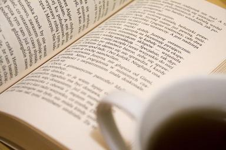

Books are one of the oldest forms of media we have. They are how we share experiences, knowlege, and conncetions. Literacy is one of the most important factors of modern soceity, so much so that until in recent history, it was a skill that was given to the people who could afford it. This page is meant to show case the different books and selection process that will happen inside my library. This is in an ideal world and includes some suggestions from both of my mentors, Mrs. Kristen Lester and Ms. Anissa Alred.
My book selection philosophy is guided by the belief that every reader should be able to find books that reflect their interests, support their learning, and help them grow as readers and thinkers. I choose titles with care and purpose, considering the age, reading level, emotional readiness, and background knowledge of the students I am serving. I also look for books that connect to classroom units, spark curiosity, and create meaningful opportunities for discussion and engagement. When selecting books, I aim to offer a balanced collection that includes a wide range of genres, perspectives, and formats. I value books that represent diverse cultures, experiences, and voices so that students can see both themselves and others in the collection. I also pay attention to student interests and community needs, choosing titles that are relevant, engaging, and useful for both independent reading and instructional support.
The Hate U Give by Angie Thomas.
I’ll Give You the Sun by Jandy Nelson.
To All the Boys I’ve Loved Before by Jenny Han.
With the Fire on High by Elizabeth Acevedo.
Far from the Tree by Robin Benway.
Crying in H Mart by Michelle Zauner.
All My Rage by Sabaa Tahir.
The Book of (Un)Hidden Things by Carolyn Mackler.
If I Stay by Gayle Forman.
The Joy Luck Club by Amy Tan.
The Wall by Eve Bunting.
A Day for Rememberin’ by Leah Henderson.
Rolling Thunder by Kate Messner.
The Poppy Lady by Barbara Elizabeth Walsh.
America’s White Table by Margot Theis Raven.
Twenty-One Steps by Jeff Gottesfeld.
The Things They Carried by Tim O’Brien.
Allies by Alan Gratz.
The War That Saved My Life by Kimberly Brubaker Bradley.
Brown Girl Dreaming by Jacqueline Woodson.
He Absolutely True Diary of a Part-Time Indian by Sherman Alexie.
Long Way Down by Jason Reynolds.
Thursday’s Child by Sonya Hartnett.
Monster by Walter Dean Myers.
The Outsiders by S. E. Hinton.
Pay It Forward by Catherine Ryan Hyde.
Walk Two Moons by Sharon Creech.
One of Us Is Lying by Karen M. McManus.
A Monster Calls by Patrick Ness.
I believe the library should be an active part of the school community, not just a place where books are stored and checked out. I support programs that bring students, families, and staff together through shared reading experiences and meaningful library events. I enjoy creating opportunities like book talks, family reading nights, reading challenges, and library outreach because they help build excitement around reading and strengthen connections between the school library and the community. These experiences can make the library adn the school feel welcoming, relevant, and supportive for all learners. My goal is to use these kinds of events to encourage literacy, build relationships, and show that reading is something that can bring people together across ages and interests.

The library is dedicated to supporting all learners in order to be able to promote literacy. Ebooks, braile, picture books, and large text are just some of the resources that we offer in order to make the library a safe and equitable place for the student body. This ensures that all learners have access to the resources they need or want and help foster a love of learning.